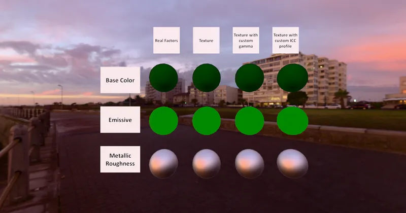

GLTF > Basic
Texture Encoding Test - RedGPU WebGPU Example
Verifies sRGB decoding and color space sampling for BaseColor and Emissive.
BaseColor와 Emissive 텍스처의 sRGB 디코딩 샘플링을 검증합니다.

GLTF > Basic
Verifies sRGB decoding and color space sampling for BaseColor and Emissive.
BaseColor와 Emissive 텍스처의 sRGB 디코딩 샘플링을 검증합니다.
